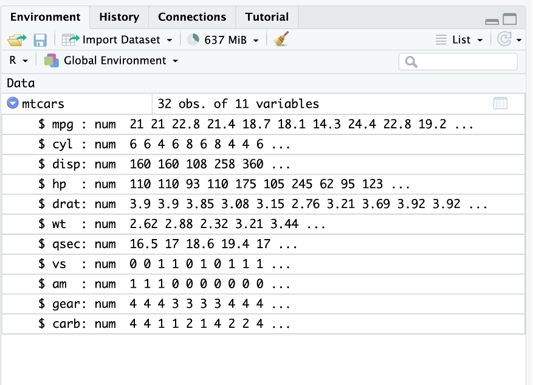

x <- round(runif(100,0,20),1)
y <- round(runif(100,0,20),1)
gr <- sample(c("ING1","ING2"),size=100,replace=T,prob=c(0.6,0.4))
df<-data.frame(NoteF=x,NoteM=y,gr=gr)TD3 : Les data-frames
C’est peut-être l’objet le plus important et le plus utilisé dans R. Il s’agit d’un tableau de données, mais contrairement aux matrices, on peut avoir différents types de données dans un même data-frame.
1 Création d’un data frame
- On crée deux variables x et y contenant \(n=100\) nombres distribués selon une loi uniforme continue sur [0,20] (fonction
runif()) et une variable gr.
Expliquer le résultat du code correspondant (la fonction round() permet d’arrondir).
- L’indexation des éléments dans un data-frame est la même que dans une matrice :
df[1,1][1] 4.8- On peut également sélectionner une colonne du data-frame via $
df$NoteF [1] 4.8 2.1 2.2 12.8 19.3 16.8 2.8 11.1 16.8 4.2 5.6 2.0 2.6 5.2 14.6
[16] 18.3 7.7 17.4 16.2 2.1 9.0 8.5 13.7 0.6 19.4 6.1 0.9 13.4 17.0 5.9
[31] 1.6 12.0 1.7 19.3 5.3 8.9 3.2 2.7 16.2 5.0 16.5 11.7 12.6 15.9 18.5
[46] 3.7 11.9 12.8 4.4 16.1 6.2 19.8 1.9 19.5 20.0 3.2 4.1 10.1 4.9 12.8
[61] 11.2 9.9 0.2 13.9 1.4 11.3 15.5 19.4 3.1 0.4 17.5 11.0 13.5 16.5 10.9
[76] 16.4 8.2 7.3 8.2 16.4 5.9 3.4 7.0 7.1 15.3 7.8 0.7 9.4 18.0 6.6
[91] 1.7 14.3 12.0 19.2 12.2 18.0 18.1 11.7 19.0 17.92 Importation d’un data frame inclus dans un package
- Pour accéder aux data-frames de R :
data()- Grâce à la fonction
help(), on peut obtenir de l’aide sur l’un des data-frames :
help("mtcars")- On charge ensuite le jeu de données :
data("mtcars")- Une fois le data frame importé on constate qu’il est présent dans la fenêtre environnement.

3 Importation d’une base de données externe
On peut utiliser une interface graphique pour ouvrir les fichiers contenant un data-frame. Les plus courants sont :
- *.csv (Comma Separed Values) : ce sont des fichiers de type tableaux sans mise en forme;
- *.xlsx : fichiers produits à partir du logiciel excel;
- *.ods : fichiers produits à partir du logiciel Calc de LibreOffice.
Ces fichiers peuvent s’importer dans l’environnement de travail avec les fonctions read.csv(), read.table(), ou read.xlsx() du package readxl.
Exercice
- Importer le data-frame contenu dans le fichier bordeaux.csv disponible sur Connect (à télécharger, et à placer dans le bon répertoire).
Voir la correction
bordeaux <- read.csv("bordeaux.csv",
header = TRUE,row.names = 1)- A quoi correspondent les paramètres
headeretrow.names?
4 Quelques fonctions utiles pour les data-frames
4.1 La fonction summary()
Cette fonction permet de résumer l’ensemble des variables du data-frame.
summary(df) NoteF NoteM gr
Min. : 0.20 Min. : 0.00 Length:100
1st Qu.: 4.70 1st Qu.: 6.55 Class :character
Median :10.95 Median : 9.75 Mode :character
Mean :10.19 Mean :10.28
3rd Qu.:16.20 3rd Qu.:14.43
Max. :20.00 Max. :19.90 4.2 La fonction apply()
La fonction apply() permet d’appliquer une fonction sur les lignes (MARGIN=1) ou les colonnes (MARGIN=2) d’un data-frame. Par exemple si on souhaite appliquer la fonction moyenne (mean()) sur les colonnes du data frame df, on utilise :
apply(df[,1:2],MARGIN=2,mean) NoteF NoteM
10.191 10.278 Remarque : on n’a utilisé que les deux premières colonnes du data-frame car la troisième n’est pas numérique (donc on ne peut pas calculer sa moyenne).
4.3 La fonction factor()
Cette fonction va être très importante pour la suite, et en particulier lorsque l’on va manipuler des jeux de donnnées en statistique.
- Un facteur est une variable qualitative (i.e. non numérique). Les valeurs prises par cette variable sont appelées modalités.
Exemples :
Une variable qualitative peut décrire, pour un aliment, le type de nourriture (modalités : Confiserie, Viande, Fruit, Légume,…).
Dans un sondage, une variable qualitative peut décrire le sexe de l’individu (modalités : Homme, Femme, Non binaire).
Il peut arriver que ces modalités soient codées. Par exemple dans certains jeux de données, on connaîtra le statut professionnel des participants (modalités : en activité, en recherche d’emploi, étudiant, à la retraite) mais on peut avoir choisi de coder les modalités par des nombres (ici de 1 à 4) mais cette variable demeure un facteur.
statut_pro<-sample(1:4,100,replace=TRUE)
## R ne voit pas qu'il s'agit d'un facteur car les modalités sont numériques
class(statut_pro)[1] "integer"table(statut_pro)statut_pro
1 2 3 4
26 25 28 21 - On utilise la fonction
factor()pour spécifier à R qu’il s’agit d’une variable qualitative. On voit le changement à traversclass()oulevels():
statut_pro<-factor(statut_pro)
class(statut_pro)[1] "factor"levels(statut_pro)[1] "1" "2" "3" "4"levels(statut_pro)<-c("en activité", "en recherche d'emploi",
"étudiant", "à la retraite")
table(statut_pro)statut_pro
en activité en recherche d'emploi étudiant
26 25 28
à la retraite
21 Remarque : Les variables binaires (facteurs à deux modalités) sont souvent codées 0/1.
- On peut être amené à vouloir avoir les modalités d’un facteur classées dans un certain ordre. Pour ce faire, on va utiliser la fonction
labels()avec l’ordre choisi :
statut_pro<-factor(statut_pro,labels=c("étudiants","en activité",
"en recherche d'emploi","à la retraite"))
table(statut_pro)statut_pro
étudiants en activité en recherche d'emploi
26 25 28
à la retraite
21 Attention les labels doivent être exactement écrits de la même façon que les levels si les modalités sont déjà écrites et sinon on peut directement agir sur les modalités via labels :
data("mtcars")
help("mtcars")
mtcars$vs<-factor(mtcars$vs,levels=0:1,labels=c("V-shaped","straight"))
mtcars$am<-factor(mtcars$am,levels=0:1,labels=c("automatic","manual"))5 Exercices
5.1 Exercice 1
Charger le fichier de données
iris. Lire l’aide de iris pour comprendre le jeu de données.Quel est le type de iris ? Quelles sont les dimensions de iris ?
Appliquer la fonction
str()à iris. A quoi correspondent les informations renvoyées ?Appliquer la fonction
summary()à iris. A quoi correspondent les informations renvoyées ?Utiliser les fonctions
colnames()etrownames(). Quelles sont les informations renvoyées ?A l’aide la fonction de texte
paste()remplacer le nom des lignes par fleur_1, …, fleur_150.Pour un data-frame on peut appeler une colonne par son nom en utilisant $ :
iris$Sepal.Length. En utilisant cette information donner la classe de la colonne Species.Quels sont les niveaux du facteur Species (fonction
levels()) ?Créer une nouvelle colonne nommée groupe (on pensera à $) dans le data frame iris identique à la colonne Species. Quelle est la classe de cette nouvelle colonne ?
Renommer les niveaux de la colonne groupe en A, B, C (A pour setosa, B pour versicolor, C pour virginica). Afficher les indices des lignes de
iriscorrespondant au groupe B.Créer l’ensemble des numéros de lignes correspondant aux fleurs du groupe A. Afficher les lignes de
iriscorrespondant au groupe A.En adoptant la même logique que la question précédente, afficher uniquement les lignes de
irisoù Sepal.Length est inférieur à 5.Combien y a-t-il d’individus ayant la longueur des sépales inférieure à 5 ?
5.2 Exercice 2
Charger le data-frame
mtcars. Combien de véhicules et de caractéristiques sur les véhicules sont contenus dans le data frame ?Deux caractéristiques sont mal identifiées dans le data-frame car ce sont des variables qualitatives (facteurs). Rectifier en utilisant la fonction
as.factor().En utilisant l’aide du data-frame
mtcarsrenommer les niveaux des deux facteurs précédents.Etablir la table de contingence de ces deux facteurs (fonction
table())Calculer la moyenne des 7 premières variables (on utilisera les fonctions
mean()etapply()).Reprendre la question précédente pour les voitures avec un moteur à plat. De même pour les voitures ayant un moteur en V et qui sont automatiques.
Calculer le nombre de voitures ayant un moteur en V qui ont au moins 3 carburateurs.